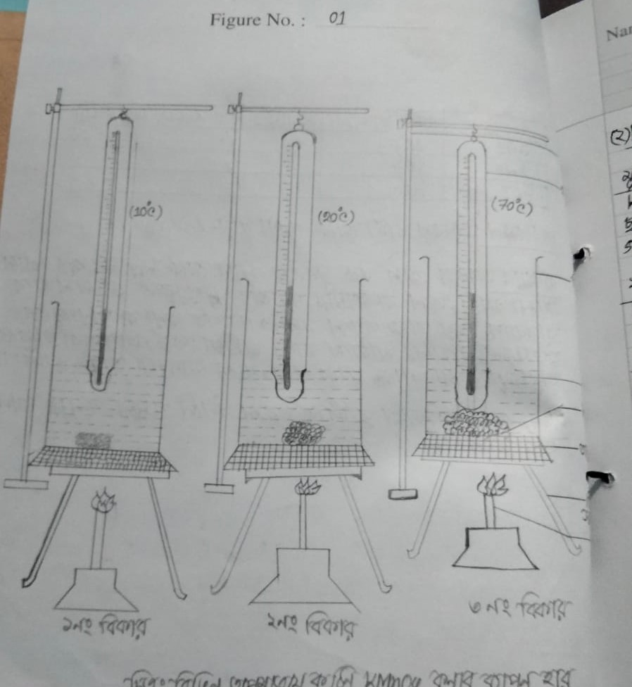
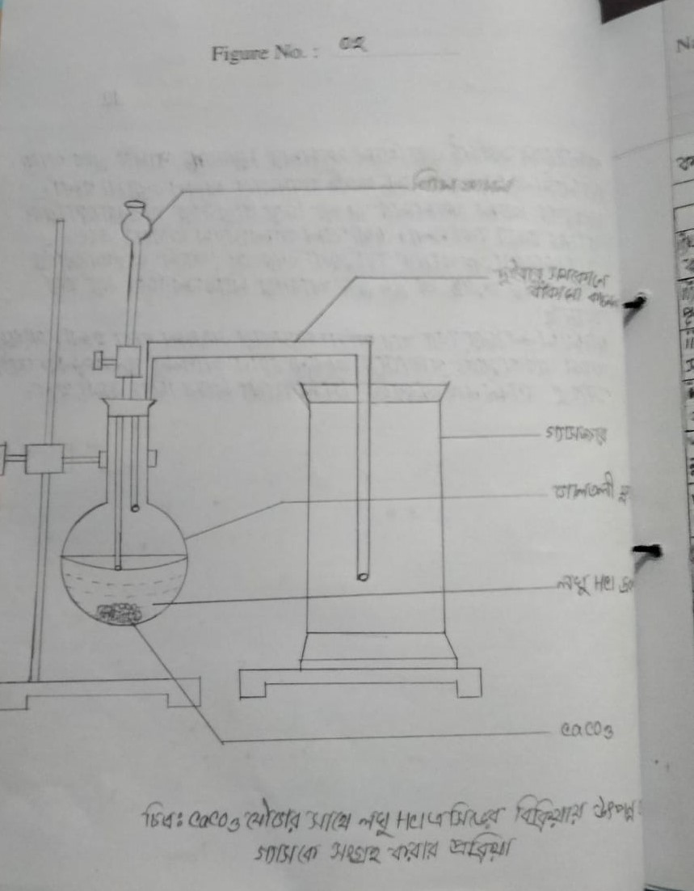
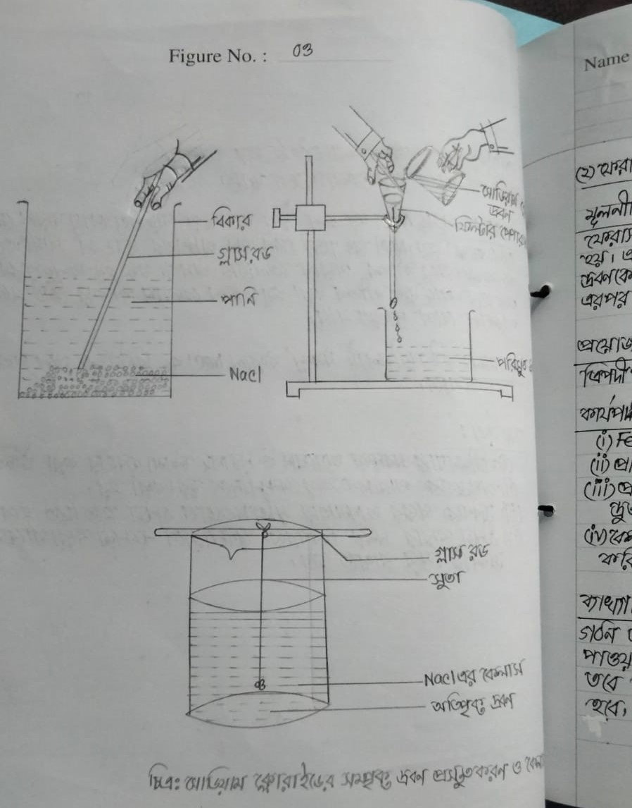
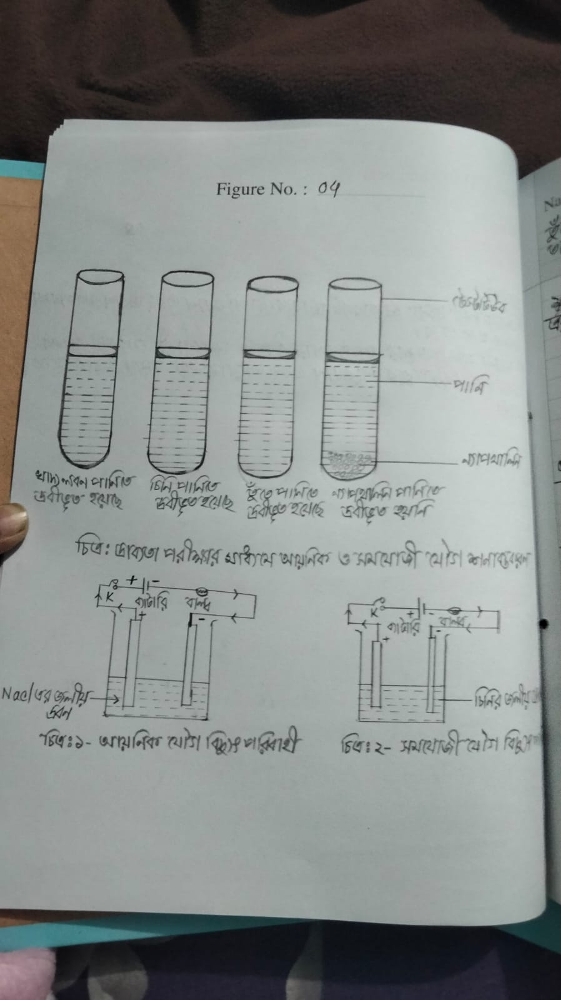
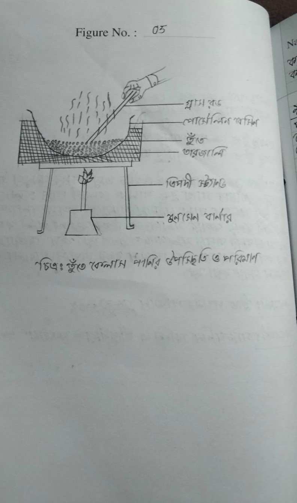
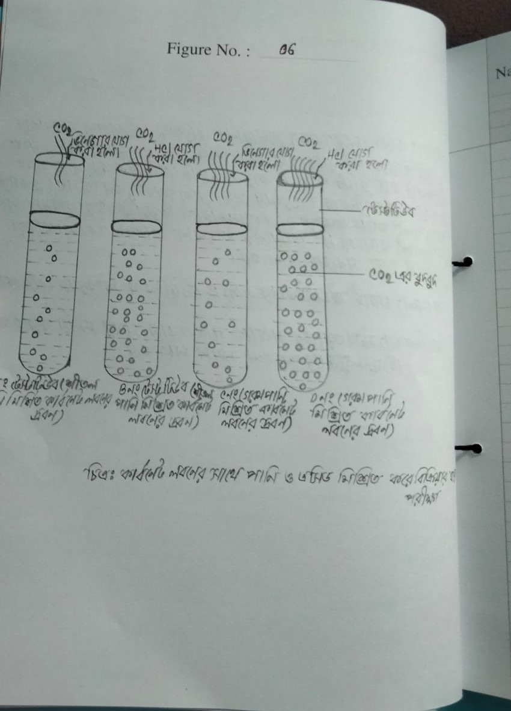

pic-1

Name of The Experiment
বিভিন্ন তাপমাত্রায় কঠিন ও তরল পদার্থের
কনার ব্যাপন হার পরীক্ষা।
Date
Expl. No. 01.
Page No. 01
১) বিভিন্ন তাপমাত্রায় কঠিন পদার্থের বশার ব্যাপন হার পরীক্ষা
মূলনীতি: কঠিন পদার্থ পটাশিয়াম পারম্যাঙ্গানেট (KMnd) এর দানা
পানিতে ছেড়ে দিলে বড় দানা আস্তে আস্তে ছোট দানায় পরিণত হয়
এবং পানি বেগুনি বর্ণ ধারণ করে। এই প্রক্রিয়ায় তাপ প্রয়োগ করলে
KMnO4 বেলাসের অনুসমূহের গতিশক্তি বৃদ্ধি পায়। যেহেতু তাপ
প্রয়োগে কনাগুলোর গতিশক্তি বৃদ্ধি পায় তাই ব্যাপন হারও বৃদিধ
পায়।
কাপানি ও রাসায়নিক দ্রব্য:
ত্রিপদী স্ট্যান্ড, তারজানী, স্টাডি, থার্মোমিটার, স্টপওয়াচ, বিকার. পানি। কঠিন KMnO4 ও বুনসেন থানার
কার্যপ্রণালি:
জতিনটি বিকারে পানি নিয়ে এর তাপমাত্রা যথাক্রমে 10, 20% ও 70% করি (ii) প্রতিটি বিকারে KMnO4 এর দানা যোগ করি এবং স্টপ ওয়াচের সাহায্যে হিসাব করি যে, কোন বিকারের দানাটি আগে দ্রবীভূত হয়। (iii) দেখা যায় ৩নং বিকারের KMnO4 এর দানা আগে অদৃশ্য হয় এবং ১
নং বিকারের দানা সবার পরে অদৃশ্য হয়।
পর্যবেক্ষণকৃত ডাটাঃ 10%, 20% ও 70 তাপমাত্রায় KMnO4 এর বেশাস অধীভূত হওয়ার প্রয়োজনীয় সময়।
Signature
pic-2

pic-3

pic-4

pic- 5

pic-6
